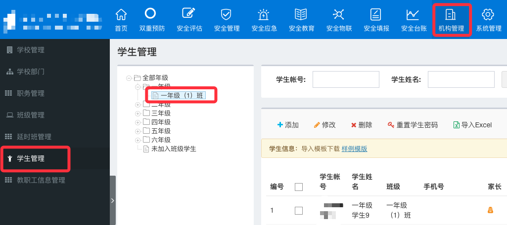
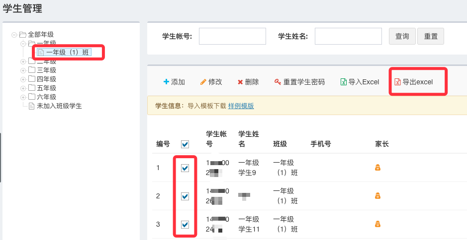
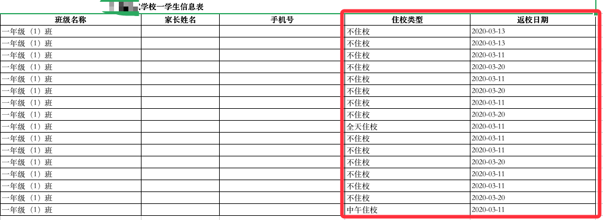
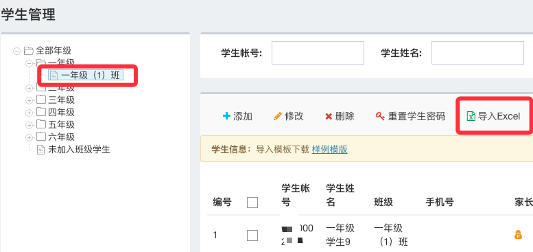

-
如何批量处理学生不应返校状态？
-
第一步：使用账号密码或App扫一扫扫码登陆电脑端平台，点击“机构管理”-“学生管理”-“选择对应的班级”。
注：平台地址可在App首页底部‘我的’模块中，点击‘设置’-‘关于’-‘官方网站’查看。 -
第二步：选中需要调整信息的学生，点击“导出Excel”,导出学生表格。
 -
第三步：打开导出的Excel表格，编辑对应的学生的注校类型或返校日期。
注:原表格中学生姓名不可修改。 -
第四步：打开平台，选择对应班级，点击“导入Excel”,导入修改后的学生Excel表格，完成批量处理学生信息。
